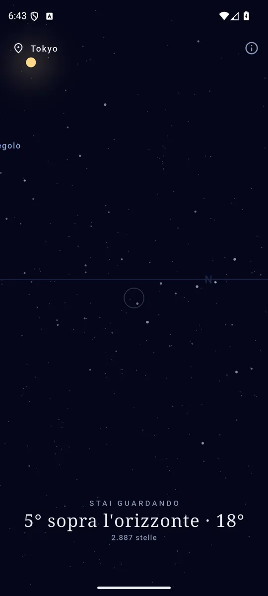
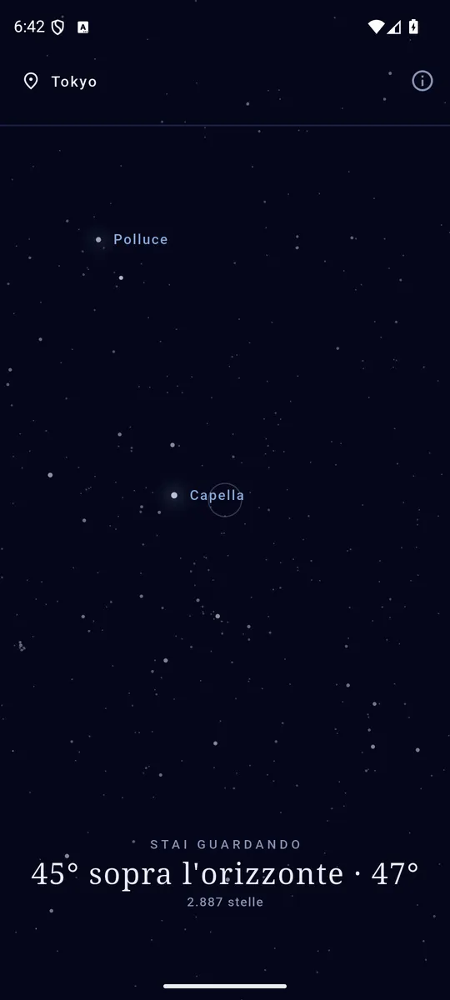
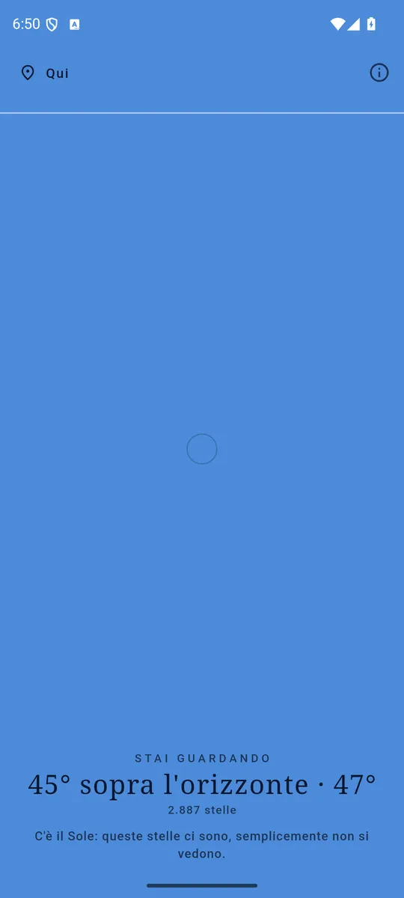

ItalianoEnglish
Punta il telefono verso il cielo e guarda lo schermo: quello che mostra è quello che hai davanti. Alza il braccio e vedi lo zenit, abbassalo e trovi l'orizzonte con nord, sud, est e ovest scritti sopra.

Quello che vedi sullo schermo è quello che hai davanti. 
Sirio, Vega, Arturo, Betelgeuse: le più luminose hanno un nome. 
Anche di giorno ci sono: è il Sole che le copre.
2887 stelle, dentro l'app
Le stelle non sono inventate e non vengono scaricate: sono il Bright Star Catalogue, 5ª edizione (Hoffleit & Warren, 1991) — lo stesso catalogo che usano gli astronomi — incluso nell'APK. Perciò l'app funziona in montagna, in aereo, con la radio spenta, e non ha bisogno di sapere niente di te per disegnare il cielo giusto. Le più luminose portano il loro nome: Sirio, Vega, Arturo, Betelgeuse, Rigel, Aldebaran, Antares, Polaris.
Come fa a sapere dove punti
Magnetometro e accelerometro, e un po' di geometria: dai due sensori si ricava come è orientato il telefono nello spazio, e da lì la proiezione di ciò che sta dietro lo schermo. È la stessa proiezione di una macchina fotografica, quindi le distanze fra le stelle sul vetro sono quelle vere.
Il cielo poi si gira da solo, perché il giorno siderale è quattro minuti più corto di quello solare: è il motivo per cui le stesse stelle sono allo zenit quattro minuti prima ogni notte, e l'app lo tiene in conto.
Anche di giorno
Di giorno lo schermo diventa azzurro e le stelle sbiadiscono, esattamente come fuori — ma l'app dice che ci sono lo stesso: sono là, è la luce del Sole che le copre. E il Sole lo trovi dov'è davvero, anche quando è sotto l'orizzonte.
Cosa non c'è, e perché
La Luna e i pianeti non ci sono in questa versione. Le formule brevi per la posizione della Luna sbagliano di un paio di gradi — cinque diametri lunari — e mettere un segno «lì attorno» sarebbe peggio che non metterlo: chi lo cerca in cielo non lo trova, e smette di fidarsi anche del resto. Arriveranno da una serie seria, o non arriveranno.
I tuoi dati restano tuoi
Sky chiede la posizione approssimativa e nient'altro: né quella precisa, né quella in background. Niente account, nessun server: la posizione non esce dal telefono e noi non la vediamo mai, e della rete l'app ha bisogno solo per gli annunci. Se preferisci non darla, c'è una lista di città inclusa nell'app: vedrai il cielo di quella città, e funziona identico.
Come si paga
Con un banner ancorato in fondo, e basta: nessun abbonamento, nessuna stella tenuta in ostaggio.
Dove trovarla
Non è ancora su Google Play. Quando ci sarà, il collegamento comparirà qui.